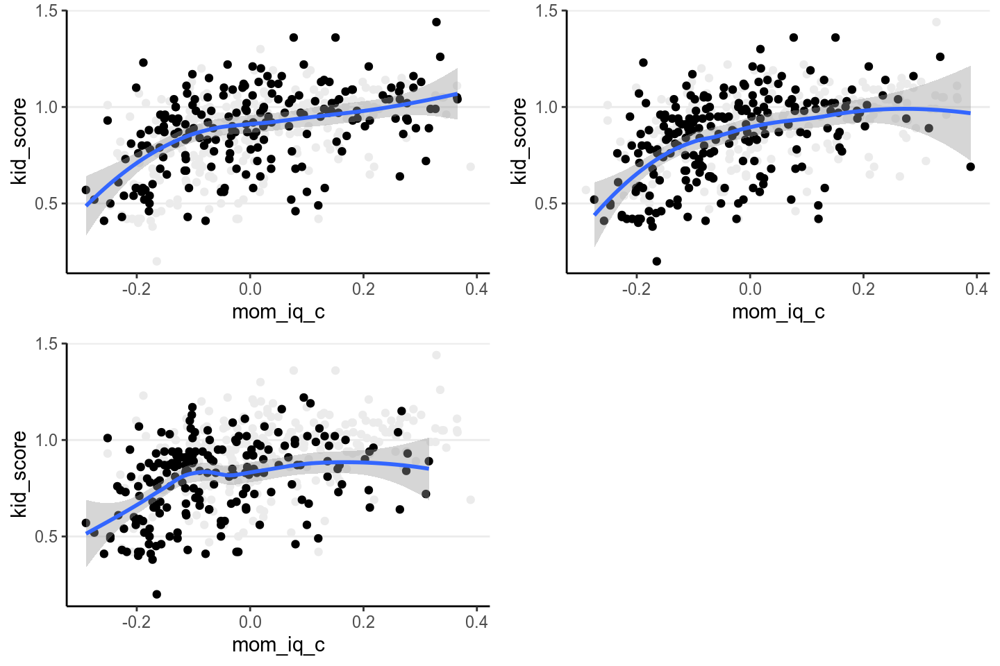
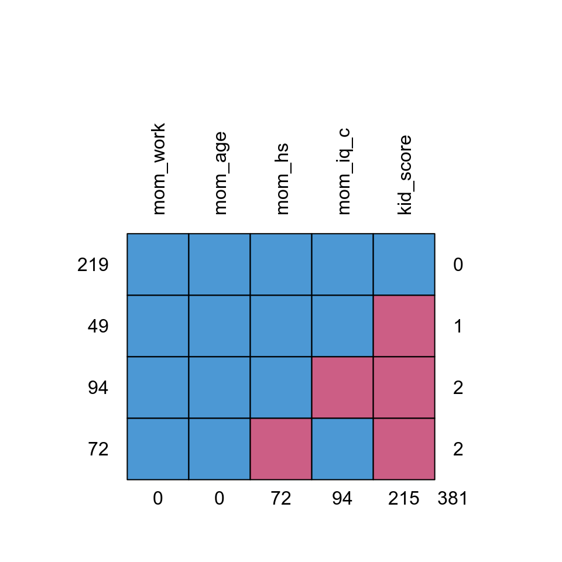
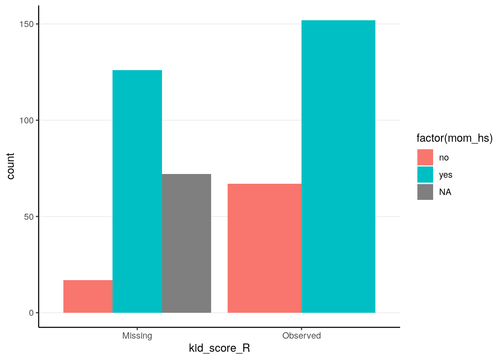
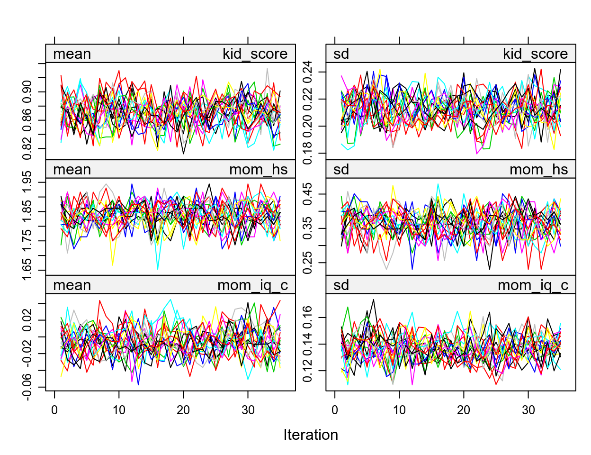

Chapter 12 Missing Data
Missing data are common in many research problems. Sometimes missing data arise from design, but more often data are missing for reasons that are beyond researchers’ control. I will first provide some conceptual discussion on the types of missing data, and then talk about the Bayesian approach for handling missing data by treating missing data as parameters with some prior information. I will then give a brief introduction of multiple imputation and its Bayesian origin. A regression with missing data problem will be used to illustrate two Bayesian approaches to handle missing data.
12.1 Missing Data Mechanisms
To simplify the discussion, assume that missing values are only present in the outcome \(Y\) in a hypothetical regression problem of using people’s age (\(X\)) to predict their voting intention (\(Y\)).
Let \(R\) be an indicator variable that denotes whether \(Y\) is missing (\(R = 0\)) or not (\(R = 1\)). For example, if \(Y\) looks like
set.seed(3)
N <- 30
x <- sort(sample(18:80, N, replace = TRUE))
y <- 0.5 * x / sd(x) + rnorm(N, sd = 0.8)
y <- round(y * 1.4 + 2, 1)
ifelse(y[1:10] > 4, NA, y[1:10])># [1] 2.4 2.7 2.4 2.0 2.0 3.9 3.2 2.3 1.7 NAthen \(R\) will be
># [1] 1 1 1 1 1 1 1 1 1 0Assume our data look like the first scatter plot below if there are no missing data:
demo_data <- tibble(y = y, x = x,
r_mcar = rep(c(TRUE, FALSE, TRUE), 10),
r_mar = 1:N >= 11,
r_nmar = rank(0.2 * x / sd(x) + 0.8 * y / sd(y)) >= 11)Figure 12.1: Scatter plots for different types of missing data
Missing data can be related to the predictor \(X\) (e.g., older people are more
likely to give a missing response), the outcome \(Y\) itself (e.g., people with
lower voting intention are less likely to respond), and some other unmeasured
factors that relate to neither \(X\) nor \(Y\), which I summarize as \(Z\). Depending
on what causes missing data, the three missing data algorithms are MCAR
(missing completely at random), MAR (missing at random), and NMAR (not
missing at random), as summarized in the figures below, which I will further
explain.
12.1.1 MCAR (Missing Completely at Random)
MCAR means that the probability of a missing response (denoted as \(R\)) is
unrelated to anything of interest in the research question. For example, for the
left graph in Figure 2, \(Z\) maybe some haphazard events such as interviewers
accidentally erase responses for some people, which we believe to be unrelated
to participants’ ages or voting intentions. The plot on the top right panel of
Figure 1 is an example, with the missing cases being grayed out.
One quick-and-dirty method to check for MCAR is to check whether the distribution of \(X\) is similar for cases with or without missing data on \(Y\), and as you can see in the above graph the means and variances of \(X\) for the group with missing data and for the group without are highly similar. This method can be generalized to data with missing data on multiple variables, and one can check whether missing data on every variable affect all other variables.
As you can see, the regression line barely changes with or without the missing data.
In general, under
MCAR, using only cases with no missing value still give valid inferences and unbiased estimations. However, for more complex models complete case analyses (also called listwise deletion) can greatly reduce the sample size for analysis, as it throws away information from cases with partial information.
12.1.2 MAR (Missing At Random)
It’s probably not the most intuitive naming, but MAR refers to the condition
that the probability of a missing observation (\(R\)) can be explained by the
observed data (i.e., \(X\) in this case). In other words, missing data does not
relate to the values that would have been observed (which is denoted as
\(Y_\textrm{mis}\)), once we considered the observed data. For example, for the
middle graph in Figure 2, some missing data on voting intentions can be
explained by some random factor \(Z\), but for some cases data are missing
because, for instance, younger people tend to be less motivated to complete the
survey. The plot on the bottom left panel of Figure 1 is an example, with the
missing cases being grayed out.
As can be seen, when data are MAR, the distributions of \(X\) are different for groups with and without missing \(Y\) values. Also, the distributions of the observed \(Y\) values differ systematically from the complete data.
Under
MAR, using only the cases without missing values still produces an unbiased estimate of the regression coefficient, if missing data is only present in \(Y\). However, for more complex models and with missing data in \(X\), more advanced methods generally give more accurate coefficient estimates and standard errors.
12.1.3 NMAR (Not Missing At Random)
NMAR is sometimes called missing not at random or non-ignorable
missingness, and as the name suggested it refers to conditions where MAR does
not hold. In other words, NMAR happens when, after considering all the observed
data, the probability of a missing value (\(R\)) still depends on the value of \(Y\)
that would have been observed. For example, if we consider people in the same
age group and still find those with lower voting intentions tend not to give
their responses, the situation can be described as NMAR. The plot on the
bottom right panel of Figure 1, where people with lowing voting intentions are
more likely to miss.
The example looks very similar to the one for MAR, including the fact that the distributions of \(X\) are different for the group with and without missing \(Y\). Indeed, there are no statistical procedures that can distinguish between MAR in general and NMAR. If there are evidence for MCAR then one can be more confident in ruling out NMAR, and there have been recent efforts to establish procedures for testing some special cases of MAR. However, for many real data problems one has to rely on reasoning, judgments, and perhaps some educated guessing to decide whether the data is MAR or NMAR.
On the other hand, if one has variables that potentially relates to the probability of missing but are not part of the model of interest (e.g., gender, SES, etc), these can be included in the imputation model (discussed later) so that the missing data mechanism better resembles MAR. Including these auxiliary variables is equivalent to changing them from unmeasured to measured, and generally can weaken the associations between the unobserved \(Y\) and \(R\), thus making the estimates less biased.
With
NMAR, valid statistical inferences can only be obtained by correctly modeling the mechanism for the missing data. Including variables that help explain probability of missing data makesMARmore reasonable.
12.1.4 Ignorable Missingness*
Let \(Y_\textrm{obs}\) be the part of the multivariate data \(Y\) that is observed (i.e., not missing), and \(Y_\textrm{mis}\) be the part that would have been observed. The likelihood now concerns both \(Y_\textrm{obs}\) and \(R\), that is, \(P(Y_\textrm{obs}, R)\). Let \(\boldsymbol{\mathbf{\phi}}\) be the set of parameters that determine the probability of missing in addition to the observed data, which can be written as \(P(R | Y_\textrm{obs}, \boldsymbol{\mathbf{\phi}})\). Note it is assumed that \(\boldsymbol{\mathbf{\phi}}\) is distinct from the model parameters \(\boldsymbol{\mathbf{\theta}}\).
For a case \(i\) with \(r_i = 1\), the joint likelihood of \((x_i, y_i, r_i = 1)\) is
\[P(x_i, y_{\textrm{obs}, i}, r_i = 1; \boldsymbol{\mathbf{\theta}}, \boldsymbol{\mathbf{\phi}}) = P(r_i = 1 | x_i, y_{\textrm{obs}, i}; \boldsymbol{\mathbf{\phi}}) P(y_{\textrm{obs}, i} | x_i; \boldsymbol{\mathbf{\theta}}) P(x_i).\]
For a case with \(r_i = 0\), \(y_i\) is missing. Assume first we know the missing value \(y_{\textrm{mis}, i}\), and the complete likelihood \((x_i, y_{\textrm{mis}, i}, r_i = 0)\) is
\[P(x_i, y_{\textrm{mis}, i}, r_i = 0; \boldsymbol{\mathbf{\theta}}, \boldsymbol{\mathbf{\phi}}) = P(r_i = 0 | x_i, y_{\textrm{mis}, i}; \boldsymbol{\mathbf{\phi}}) P(y_{\textrm{mis}, i} | x_i; \boldsymbol{\mathbf{\theta}}) P(x_i)\]
But because \(y\) is missing, we need to integrate out the missing value to obtain the observed likelihood of \((x_i, r_i = 0)\)
\[\begin{align*} P(x_i, r_i = 0; \boldsymbol{\mathbf{\theta}}, \boldsymbol{\mathbf{\phi}}) & = \int P(r_i = 0 | x_i, y_{\textrm{mis}, i}; \boldsymbol{\mathbf{\phi}}) P(y_{\textrm{mis}, i} | x_i; \boldsymbol{\mathbf{\theta}}) P(x_i) \; \mathrm{d}y_{\textrm{mis}, i} \\ & = P(x_i) \int P(r_i = 0 | x_i, y_{\textrm{mis}, i}; \boldsymbol{\mathbf{\phi}}) P(y_{\textrm{mis}, i} | x_i; \boldsymbol{\mathbf{\theta}}) \; \mathrm{d}y_{\textrm{mis}, i} \end{align*}\]
Because the likelihood depends on \(R\) and cannot be separated from \(\boldsymbol{\mathbf{\phi}}\), correct inference on \(\boldsymbol{\mathbf{\theta}}\) can be obtained only by correct modeling the missing data mechanism.
12.1.4.1 If MCAR Holds
However, if the condition for MCAR is satisfied such that
\[P(r_i = 0 | x_i, y_{\textrm{mis}, i}; \boldsymbol{\mathbf{\phi}}) = P(r_i = 0; \boldsymbol{\mathbf{\phi}}),\]
that is, \(R\) is related to neither \(X\) and \(Y\) Then the observed likelihood is
\[\begin{align*} P(x_i, r_i = 0; \boldsymbol{\mathbf{\theta}}, \boldsymbol{\mathbf{\phi}}) & = P(x_i) \int P(r_i = 0; \boldsymbol{\mathbf{\phi}}) P(y_{\textrm{mis}, i} | x_i; \boldsymbol{\mathbf{\theta}}) \; \mathrm{d}y_{\textrm{mis}, i} \\ & = P(x_i) P(r_i = 0; \boldsymbol{\mathbf{\phi}}) \times \int P(y_{\textrm{mis}, i} | x_i; \boldsymbol{\mathbf{\theta}}) \; \mathrm{d}y_{\textrm{mis}, i} \\ & = P(x_i) P(r_i = 0; \boldsymbol{\mathbf{\phi}}) \end{align*}\]
So inference of \(\boldsymbol{\mathbf{\theta}}\) does not depend on the missing data mechanism \(P(r_i = 0; \boldsymbol{\mathbf{\phi}})\), and missingness is ignorable.
12.1.4.2 If MAR Holds
Similarly, if the condition for MAR is satisfied such that
\[P(r_i = 0 | x_i, y_{\textrm{mis}, i}; \boldsymbol{\mathbf{\phi}}) = P(r_i = 0 | x_i, ; \boldsymbol{\mathbf{\phi}}),\]
that is, \(R\) is not related to \(Y\) after taking into account \(X\). Then the observed likelihood is
\[\begin{align*} P(x_i, r_i = 0; \boldsymbol{\mathbf{\theta}}, \boldsymbol{\mathbf{\phi}}) & = P(x_i) \int P(r_i = 0 | x_i; \boldsymbol{\mathbf{\phi}}) P(y_{\textrm{mis}, i} | x_i; \boldsymbol{\mathbf{\theta}}) \; \mathrm{d}y_{\textrm{mis}, i} \\ & = P(x_i) P(r_i = 0 | x_i; \boldsymbol{\mathbf{\phi}}) \times \int P(y_{\textrm{mis}, i} | x_i; \boldsymbol{\mathbf{\theta}}) \; \mathrm{d}y_{\textrm{mis}, i} \\ & = P(x_i) P(r_i = 0 | x_i; \boldsymbol{\mathbf{\phi}}) \end{align*}\]
So inference of \(\boldsymbol{\mathbf{\theta}}\) does not depend on the missing data mechanism \(P(r_i = 0 | x_i; \boldsymbol{\mathbf{\phi}})\), and missingness is ignorable.
On the other hand, if \(r_i\) depends on \(y_\textrm{mis}\) (i.e., NMAR) so that \(P(r_i = 0 | x_i, y_{\textrm{mis}, i}; \boldsymbol{\mathbf{\phi}})\) cannot be written outside of the integral, inference of \(\boldsymbol{\mathbf{\theta}}\) depends on the missing data mechanism, so missingness is non-ignorable.
The discussion generalizes to missing data on multiple variables.
12.2 Bayesian Approaches for Missing Data
We will be using the kidiq data set we discussed in Chapter 7. I’ll do the
same rescaling and coding mom_hs as a factor variable:
kidiq <- haven::read_dta("../data/kidiq.dta")
kidiq100 <- kidiq %>%
mutate(mom_iq = mom_iq / 100, # divid mom_iq by 100
kid_score = kid_score / 100, # divide kid_score by 100
mom_iq_c = mom_iq - 1,
mom_hs = factor(mom_hs, labels = c("no", "yes"))) %>%
select(- mom_iq)In R, the package mice can be used to perform multiple imputation (to be
discussed soon), as well as to create missing data. First, let’s generate some
missing completely at random (MCAR) data by randomly removing up to 50% of
the data:
library(mice)
set.seed(1955)
kidiq100_mcar <- ampute(kidiq100, prop = 0.5,
pattern = data.frame(kid_score = c(0, 0, 0),
mom_hs = c(1, 1, 0),
mom_work = c(1, 1, 1),
mom_age = c(1, 1, 1),
mom_iq_c = c(1, 0, 1)),
freq = c(.2, .4, .4),
mech = "MCAR")
kidiq100_mcar <- kidiq100_mcar$ampThe second time, I’ll generate some missing at random (MAR) data:
set.seed(1955)
kidiq100_mar <- ampute(kidiq100, prop = 0.5,
pattern = data.frame(kid_score = c(0, 0, 0),
mom_hs = c(1, 1, 0),
mom_work = c(1, 1, 1),
mom_age = c(1, 1, 1),
mom_iq_c = c(1, 0, 1)),
freq = c(.2, .4, .4),
mech = "MAR")># Warning: Data is made numeric because the calculation of weights requires
># numeric dataAnd finally, some not missing at random (NMAR) data:
set.seed(1955)
kidiq100_nmar <- ampute(kidiq100, prop = 0.5,
pattern = data.frame(kid_score = c(0, 0, 0),
mom_hs = c(1, 1, 0),
mom_work = c(1, 1, 1),
mom_age = c(1, 1, 1),
mom_iq_c = c(1, 0, 1)),
freq = c(.2, .4, .4),
# mice call it MNAR
mech = "MNAR")># Warning: Data is made numeric because the calculation of weights requires
># numeric dataLet’s check the distributions of the resulting data:
p1 <- ggplot(kidiq100_mcar, aes(x = mom_iq_c, y = kid_score)) +
geom_point(data = kidiq100, color = "grey92") +
geom_point() +
geom_smooth()
p2 <- p1 %+% kidiq100_mar
p3 <- p1 %+% kidiq100_nmar
grid.arrange(p1, p2, p3, nrow = 2)># `geom_smooth()` using method = 'loess' and formula 'y ~ x'># Warning: Removed 230 rows containing non-finite values (stat_smooth).># Warning: Removed 230 rows containing missing values (geom_point).># `geom_smooth()` using method = 'loess' and formula 'y ~ x'># Warning: Removed 215 rows containing non-finite values (stat_smooth).># Warning: Removed 215 rows containing missing values (geom_point).># `geom_smooth()` using method = 'loess' and formula 'y ~ x'># Warning: Removed 239 rows containing non-finite values (stat_smooth).># Warning: Removed 239 rows containing missing values (geom_point).
When eyeballing it doesn’t appear that the data are very different, but the
regression slopes are affected by the different missing data mechanisms. We’ll
look at the simple regression model of using mom_iq_c to predict kid_score,
using the MAR data set. In that data set, the missingness of kid_score
actually depends on both mom_iq_c and mom_hs, but when the regression does
not include mom_hs in the model, the resulting situation will actually be
NMAR.
The missing data pattern of the kidiq100_mar data set is:
# Recode mom_hs to factor
kidiq100_mar$mom_hs <- factor(kidiq100_mar$mom_hs, labels = c("no", "yes"))
md.pattern(kidiq100_mar, rotate.names = TRUE)
># mom_work mom_age mom_hs mom_iq_c kid_score
># 219 1 1 1 1 1 0
># 49 1 1 1 1 0 1
># 94 1 1 1 0 0 2
># 72 1 1 0 1 0 2
># 0 0 72 94 215 381Which shows that only 219 observations had full data, and most were missing the
kid_score variable.
12.2.1 Complete Case Analysis/Listwise Deletion
By default, brms uses only cases with no missing data. For example,
m3_ld <- brm(kid_score ~ mom_iq_c + mom_hs, data = kidiq100_mar,
prior = c(prior(normal(0, 1), class = "Intercept"),
# set for all "b" coefficients
prior(normal(0, 1), class = "b"),
prior(student_t(4, 0, 1), class = "sigma")),
seed = 2302
)># Warning: Rows containing NAs were excluded from the model.># Family: gaussian
># Links: mu = identity; sigma = identity
># Formula: kid_score ~ mom_iq_c + mom_hs
># Data: kidiq100_mar (Number of observations: 219)
># Samples: 4 chains, each with iter = 2000; warmup = 1000; thin = 1;
># total post-warmup samples = 4000
>#
># Population-Level Effects:
># Estimate Est.Error l-95% CI u-95% CI Rhat Bulk_ESS Tail_ESS
># Intercept 0.81 0.03 0.76 0.86 1.00 3395 3055
># mom_iq_c 0.71 0.11 0.50 0.92 1.00 3518 2641
># mom_hsyes 0.07 0.03 0.01 0.13 1.00 3583 3274
>#
># Family Specific Parameters:
># Estimate Est.Error l-95% CI u-95% CI Rhat Bulk_ESS Tail_ESS
># sigma 0.20 0.01 0.18 0.22 1.00 3632 2916
>#
># Samples were drawn using sampling(NUTS). For each parameter, Eff.Sample
># is a crude measure of effective sample size, and Rhat is the potential
># scale reduction factor on split chains (at convergence, Rhat = 1).Notice that the number of observations is only 219. As previously
explained, this analysis is only valid when data are missing completely at
random or missing at random (i.e., missingness of the outcome only depends
on mom_iq_c and factors unrelated to Ozone).
If you recall in Chapter 7, the coefficient using the full data should be:
m3 <- brm(kid_score ~ mom_iq_c + mom_hs, data = kidiq100,
prior = c(prior(normal(0, 1), class = "Intercept"),
# set for all "b" coefficients
prior(normal(0, 1), class = "b"),
prior(student_t(4, 0, 1), class = "sigma")),
seed = 1955
)># Family: gaussian
># Links: mu = identity; sigma = identity
># Formula: kid_score ~ mom_iq_c + mom_hs
># Data: kidiq100 (Number of observations: 434)
># Samples: 4 chains, each with iter = 2000; warmup = 1000; thin = 1;
># total post-warmup samples = 4000
>#
># Population-Level Effects:
># Estimate Est.Error l-95% CI u-95% CI Rhat Bulk_ESS Tail_ESS
># Intercept 0.82 0.02 0.78 0.86 1.00 3840 3093
># mom_iq_c 0.56 0.06 0.44 0.68 1.00 3672 2883
># mom_hsyes 0.06 0.02 0.02 0.10 1.00 3761 3213
>#
># Family Specific Parameters:
># Estimate Est.Error l-95% CI u-95% CI Rhat Bulk_ESS Tail_ESS
># sigma 0.18 0.01 0.17 0.19 1.00 3899 3136
>#
># Samples were drawn using sampling(NUTS). For each parameter, Eff.Sample
># is a crude measure of effective sample size, and Rhat is the potential
># scale reduction factor on split chains (at convergence, Rhat = 1).So the listwise approach overestimated the regression coefficient. We can do better.
Now, take a look on whether missingness in kid_score is related to other
variables.
# Compute the missingness indicator (you can use the `within` function too)
kidiq100_mar_R <- transform(kidiq100_mar,
kid_score_R = factor(as.numeric(!is.na(kid_score)),
labels = c("Missing",
"Observed")))# Plot distributions of variables against missingness indicator
qplot(kid_score_R, mom_iq_c, data = kidiq100_mar_R, geom = "boxplot")># Warning: Removed 94 rows containing non-finite values (stat_boxplot).
ggplot(data = kidiq100_mar_R, aes(x = kid_score_R)) +
geom_bar(aes(fill = factor(mom_hs)), position = position_dodge())
As we already knew, missingness of kid_score is related to both mom_iq_c
and mom_hs, in that those with higher mom_iq_c and those whose mother had
high school degree were more likely to be missing.
12.2.2 Treat Missing Data as Parameters
A fully Bayesian approach to handle missing data is to treat the missing
kid_score values just as parameters, and assign priors to them. When the
missing data mechanism is ignorable (MCAR or MAR), we can assume that the
missing and observed kid_score values are exchangeable, conditioning on the
predictors (i.e., whether kid_score is missing or not does not add information
to the kid_score values). Therefore, if kid_score is missing, we use the
likelihood as the prior for the missing values:
\[\begin{align*} \mathtt{kid_score}_{\textrm{obs}, i}& \sim \mathcal{N}(\beta_0 + \beta_1 \mathtt{mom_iq_c}_i, \sigma) \\ \mathtt{kid_score}_{\textrm{mis}, i}& \sim \mathcal{N}(\beta_0 + \beta_1 \mathtt{mom_iq_c}_i, \sigma) \\ \beta_0 & \sim \mathcal{N}(0, 1) \\ \beta_1 & \sim \mathcal{N}(0, 1) \\ \beta_2 & \sim \mathcal{N}(0, 1) \end{align*}\]
data {
int<lower=0> N; // number of observations
vector[N] y; // response variable (including missing values);
int<lower=0, upper=1> y_obs[N]; // missingness indicator for Y
int<lower=0> p; // number of predictor variables (exclude intercept)
matrix[N, p] X; // predictor variable matrix
}
transformed data {
int n_obs = sum(y_obs); // number of observed cases
int ns[n_obs]; // indices of observed cases
int ny = 1;
for (n in 1:N) {
if (y_obs[n]) {
ns[ny] = n;
ny += 1;
}
}
}
parameters {
real beta_0; // intercept
vector[2] beta; // 2 slopes
real<lower=0> sigma; // error standard deviation
}
model {
// likelihood for observed Y
y[ns] ~ normal_id_glm(X[ns, ], beta_0, beta, sigma);
// prior
beta_0 ~ normal(0, 1);
beta ~ normal(0, 1);
sigma ~ student_t(4, 0, 1);
}
generated quantities {
real yrep[N]; // simulated data based on model
vector[N] yhat = beta_0 + X * beta; // used to compute R-squared effect size
for (i in 1:N) {
yrep[i] = normal_rng(yhat[i], sigma);
}
}m3_stan <- stan("../codes/normal_regression_missing.stan",
data = list(N = nrow(kidiq100_mar_obsX),
y = replace_na(kidiq100_mar_obsX$kid_score, 99),
y_obs = as.numeric(
!is.na(kidiq100_mar_obsX$kid_score)
),
p = 2,
X = model.matrix(~ mom_iq_c + mom_hs,
data = kidiq100_mar_obsX)[ , -1]),
seed = 1234)Note that the results are basically identical to the complete case analyses, and
the posterior distributions of the missing \(Y\) values are essentially the
predictive intervals given the \(X\) values. For example, for
the first 10 observations with missing kid_score values,
draws_ymis <-
as.matrix(m3_stan, pars = "yrep")[ , is.na(kidiq100_mar_obsX$kid_score)]
mcmc_areas_ridges(draws_ymis[ , 1:10], bw = "SJ")
Figure 12.2: Posterior density plots of the first two missing values of \texttt{kid_score}
The posterior distributions of the missing values are highly related to the missing data handling technique called multiple imputation, which we will discuss next. Indeed, each posterior sample can be considered an imputed data set. The posterior draws of the missing values are also called plausible values.
12.2.3 Multiple Imputation
Multiple imputation is one of the modern techniques for missing data handling, and is general in that it has a very broad application. It uses the observed data and the observed associations to predict the missing values, and captures the uncertainty involved in the predictions by imputing multiple data sets. That’s a bit abstract, but with your Bayesian knowledge, that just means getting samples from the posterior distributions of the missing values, and then substitute them to the missing holes to form an imputed data set. The difference is that, instead of using all posterior samples, we usually obtain 20 or 30 imputed data sets, which can be saved and used for almost any kind of analyses, Bayesian or frequentist.
12.2.3.1 Multiple imputation has several advantages
- It provides valid results when data is MAR
- It reduces biases when data is NMAR by incorporating covariates that help
explain the missing data mechanism (e.g.,
mom_workandmom_age) - It is very flexible and can impute continuous and categorical variables
12.2.3.2 Example of multiple imputation
Although in theory one can use the Bayesian procedures with Stan to account
for missing data or to do multiple imputations, there are some limitations.
First, when the goal is to impute missing data instead of making inferences on
the model parameters, the algorithm in Stan may not be as efficient as
specialized programs for multiple imputation. Second, the Hamiltonian Monte
Carlo sampler in Stan requires the use of derivatives, so it is not (yet)
well-equipped to handle categorical parameters. Thus, it is hard or not possible
to handle categorical missing data. Third, when the number of variables with
missing data is large, it is tedious to specify the missing data mechanism for
all variables.
Instead, as Gelman et al. (2013) recommended, we can handle missing data using a two-step process:
- Do multiple imputation using a specialized program
- Use
brmsorrstan(or other Bayesian methods) to analyze each imputed data set
12.2.3.3 R packages for multiple imputation
There are several packages in R for multiple imputation (e.g., Amelia, jomo,
mi, mice, missForest, norm, pan). Although these packages differ in
terms of their underlying algorithms, my experience and also evidence from the
literature suggested that they usually gave similar performance for continuous
missing data, but several packages have specialized functionality for specific
models and data types (e.g., categorical missing data, multilevel data).
I will illustrate the use of mice below. I strongly encourage you to take a
look on the vignettes found on the website of the package:
https://github.com/stefvanbuuren/mice. Also, the author of the package has a
nice book on multiple imputation (Van Buuren 2018), which is freely available at
https://stefvanbuuren.name/fimd/ and I encourage you to read if you are
interested. Note that the example discussed here is simple so not much fine
tuning for the imputation is needed. For your own analyses multiple imputation
can be complex, and you should consult statisticians or other resources to set
up a reasonable imputation model.
Let’s continue with the kidiq example. We can use the whole data set for
imputation.
In general it’s recommended to include covariates that have even minor associations with the probability of missing. The bias introduced by ignoring an important covariate usually is higher than the bias introduced by including a inappropriate covariate. However, see Thoemmes and Rose (2014) for a cautionary note.
In planning a study, if high missing rate on a variable is anticipated, one can collect covariates that can help explain the missing data mechanism. This helps recover missing information in the analyses.
12.2.3.3.1 1. Setting up and run the imputation
With binary and continuous missing variables, it can be as simple as running the following:
library(mice)
# Using mice to impute 20 data sets
kidiq100_imp <- mice(kidiq100_mar, m = 20, maxit = 35,
printFlag = FALSE) # set to false only for knitting to RmdOf course this oversimplifies the complexity of multiple imputation. By default it uses the method called “predictive mean matching” to replace missing data with a randomly chosen value from several similar cases (see https://stefvanbuuren.name/fimd/sec-pmm.html). Things will get more complicated when you have more variables and complex data types.
Typing kidiq100_imp$imp will show the imputed missing values. Check ?mice
for more information. The complete function fills the missing values to the
missing holes to form data sets with no missing data.
># kid_score mom_hs mom_work mom_age mom_iq_c
># 1 1.21 yes 4 27 -0.1883
># 2 1.26 yes 4 25 0.2754
># 3 0.85 yes 4 27 0.1544
># 4 0.41 yes 3 25 -0.1785
># 5 0.42 yes 4 27 -0.0725
># 6 0.98 no 1 18 0.0790
># 7 0.69 yes 4 20 0.3889
># 8 1.16 yes 3 23 0.2515
># 9 1.02 yes 1 24 -0.1838
># 10 0.95 yes 1 19 -0.0493Compared to the original data:
># # A tibble: 10 x 5
># kid_score mom_hs mom_work mom_age mom_iq_c
># <dbl> <fct> <dbl> <dbl> <dbl>
># 1 0.65 yes 4 27 0.211
># 2 0.98 yes 4 25 -0.106
># 3 0.85 yes 4 27 0.154
># 4 0.83 yes 3 25 -0.00550
># 5 1.15 yes 4 27 -0.0725
># 6 0.98 no 1 18 0.0790
># 7 0.69 yes 4 20 0.389
># 8 1.06 yes 3 23 0.251
># 9 1.02 yes 1 24 -0.184
># 10 0.95 yes 1 19 -0.049312.2.3.3.2 2. Check for Convergence
We should also look at convergence:

These are basically Markov chains in regular Bayesian analyses. So if you see some chains are constantly above or below others then it’s problematic.
See https://www.gerkovink.com/miceVignettes/Convergence_pooling/Convergence_and_pooling.html for additional steps to check for convergence.
12.2.3.3.3 3. Run brm_multiple on imputed data sets
brms directly supports multiply imputed data sets. Simply use the
brm_multiple function and supply the multiply imputed data object to it. Also,
for computational efficiency using two chains for each imputed data set would
be faster.
m3_imp <- brm_multiple(kid_score ~ mom_iq_c + mom_hs, data = kidiq100_imp,
prior = c(prior(normal(0, 1), class = "Intercept"),
# set for all "b" coefficients
prior(normal(0, 1), class = "b"),
prior(student_t(4, 0, 1), class = "sigma")),
seed = 1955,
chains = 2L,
cores = 2L
)See this vignette: https://cran.r-project.org/web/packages/brms/vignettes/brms_missings.html#compatibility-with-other-multiple-imputation-packages for more information. If you look at the results:
># Warning: The model has not converged (some Rhats are > 1.05). Do not analyse the results!
># We recommend running more iterations and/or setting stronger priors.># Family: gaussian
># Links: mu = identity; sigma = identity
># Formula: kid_score ~ mom_iq_c + mom_hs
># Data: kidiq100_imp (Number of observations: 434)
># Samples: 40 chains, each with iter = 2000; warmup = 1000; thin = 1;
># total post-warmup samples = 40000
>#
># Population-Level Effects:
># Estimate Est.Error l-95% CI u-95% CI Rhat Bulk_ESS Tail_ESS
># Intercept 0.80 0.02 0.76 0.85 1.15 166 768
># mom_iq_c 0.67 0.10 0.48 0.85 1.39 84 329
># mom_hsyes 0.07 0.03 0.02 0.13 1.18 143 665
>#
># Family Specific Parameters:
># Estimate Est.Error l-95% CI u-95% CI Rhat Bulk_ESS Tail_ESS
># sigma 0.19 0.01 0.18 0.21 1.20 137 256
>#
># Samples were drawn using sampling(NUTS). For each parameter, Eff.Sample
># is a crude measure of effective sample size, and Rhat is the potential
># scale reduction factor on split chains (at convergence, Rhat = 1).You will see that there are 40 chains in the results. The Rhat value will
be much higher than 1, as the chains are from different data sets and will never
converge. Instead, you should investigate the Rhat for each data set by
># b_Intercept b_mom_iq_c b_mom_hsyes sigma lp__
># 1 1.001 1.002 1.002 0.999 1.000
># 2 1.000 1.003 1.001 1.000 1.000
># 3 0.999 1.000 0.999 1.000 1.001
># 4 1.001 1.000 1.001 1.000 1.001
># 5 0.999 0.999 1.000 0.999 0.999
># 6 0.999 1.000 0.999 1.000 1.000
># 7 0.999 1.002 1.000 1.003 1.000
># 8 0.999 0.999 0.999 1.000 0.999
># 9 1.000 1.000 0.999 1.000 1.003
># 10 0.999 0.999 0.999 0.999 1.001
># 11 1.002 1.000 1.001 1.001 1.000
># 12 1.001 1.000 1.000 1.001 1.000
># 13 0.999 1.000 0.999 0.999 1.001
># 14 1.000 1.003 1.001 1.000 0.999
># 15 1.000 1.000 0.999 1.000 1.006
># 16 0.999 0.999 0.999 1.001 1.002
># 17 1.000 1.000 0.999 1.001 1.003
># 18 1.000 1.000 1.000 1.001 1.000
># 19 1.000 1.000 0.999 1.001 1.002
># 20 1.000 1.001 1.000 1.001 1.003So the chains have converged for each individual data set.
Now, put the results together:
source("../codes/extract_brmsfit.R")
texreg::screenreg(map(list(m3, m3_ld, m3_imp),
extract_brmsfit,
# LOO-IC and WAIC not meaningful for comparing different
# data
include.loo.ic = FALSE,
include.waic = FALSE),
custom.model.names = c("Full data",
"Complete case",
"MI"))># Warning: The model has not converged (some Rhats are > 1.05). Do not analyse the results!
># We recommend running more iterations and/or setting stronger priors.># Warning: Using only the first imputed data set. Please interpret the results
># with caution until a more principled approach has been implemented.>#
># ====================================================
># Full data Complete case MI
># ----------------------------------------------------
># Intercept 0.82 * 0.81 * 0.80 *
># [0.78; 0.86] [0.76; 0.86] [0.75; 0.85]
># mom_iq_c 0.56 * 0.71 * 0.67 *
># [0.43; 0.67] [0.48; 0.90] [0.48; 0.85]
># mom_hsyes 0.06 * 0.07 * 0.07 *
># [0.02; 0.10] [0.01; 0.13] [0.02; 0.13]
># ----------------------------------------------------
># R^2 0.21 0.22 0.22
># Num. obs. 434 219 434
># ====================================================
># * 0 outside the confidence intervalYou can see that the coefficients for mom_iq_c is closer to the original data
with multiple imputation, and the credible intervals are slightly shorter than
complete case analyses.
For data with more variables, choices of missing data handling method can make a substantial difference. Therefore, researchers need to be thoughtful in choosing imputation models that best reflect the missing data mechanism.
Missing data is an active research area, and this note only covers a very small fraction of the issues discussed in the literature.
References
Gelman, Andrew, John B. Carlin, Hal S. Stern, David B. Dunson, Aki Vehtari, and Donald Rubin. 2013. Bayesian Data Analysis. 3rd ed. London, UK: CRC Press.
Thoemmes, Felix, and Norman Rose. 2014. “A Cautious Note on Auxiliary Variables That Can Increase Bias in Missing Data Problems.” Multivariate Behavioral Research 49 (5): 443–59.
Van Buuren, Stef. 2018. Flexible Imputation of Missing Data. 2nd ed. Boca Raton, FL: CRC Press. https://stefvanbuuren.name/fimd/.